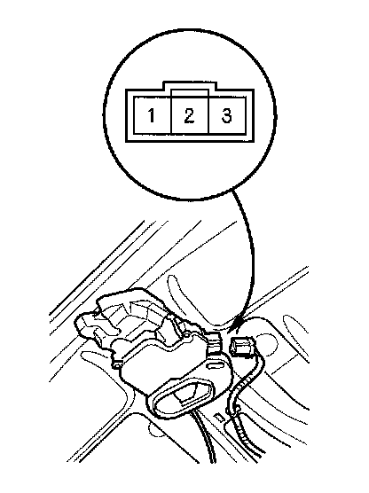

Trunk Release Actuator Test
Trunk Release Actuator Test1. Open the trunk lid.

2. Disconnect the 3P connector from the trunk lid latch switch/trunk release actuator.
3. Check actuator operation by connecting power to the No.1 terminal and ground to the No.2 terminal momentarily. The actuator should work.
4. If the actuator does not work, replace the trunk lid latch switch/release actuator assembly.